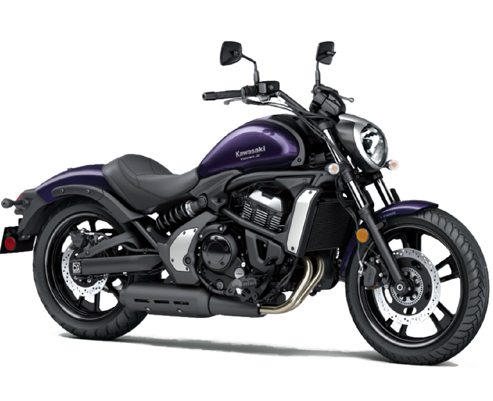
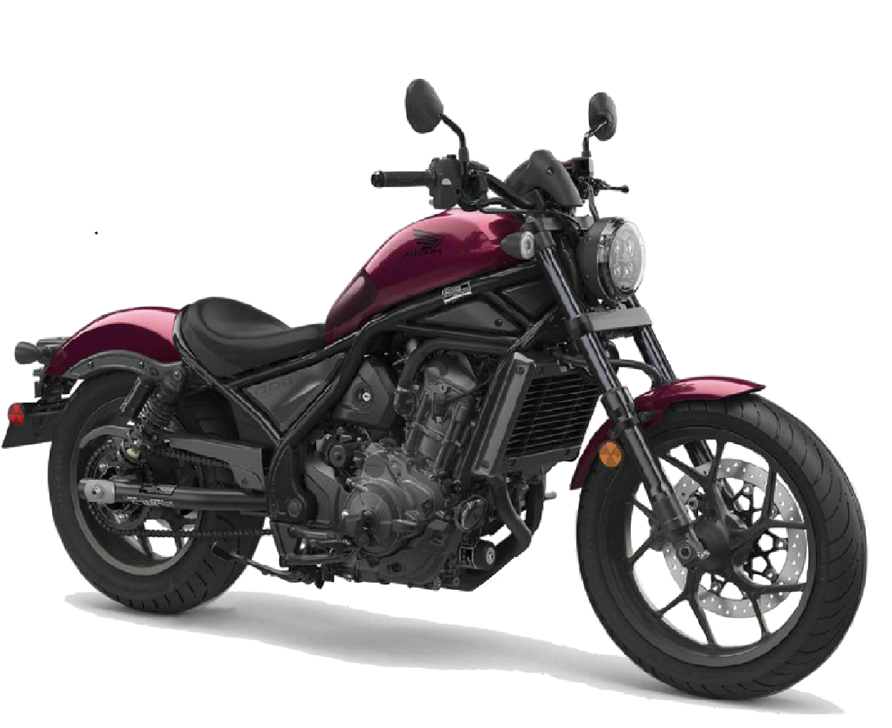

My motorbikes
Pro's
- Learner approved (more details)
- Low seat height
- Ultra light-weight
- Small frame (W, L)
- easy access tool-kit
- built-in helmet lock
Con's
- No fuel gauge
- Small gas tank
- High vibration
(single cylinder engine)
Pro's
- Smooth ride
- Starts easy
- decent power-to-weight (more info)
- Low seat height
- Bigger model available
(happy with low revs)
(if I really fell in love)
Con's
- No fuel gauge
- Small gas tank
- Foot pedals are further back
(not my personal preference)
My next bike..
This year I plan on upgrading to something a little more powerful and stable. There are thousands of options out there, but these are my top contenders:

Harley Davidson Softtail Slim S
V-twin, 1800cc, 85 hp
economical, same tyres as my cmx500
>300kg, expensive to maintain

Kawasaki Vulcan S
EN650, 650cc, 60 hp
nice look (my original first choice)
less grunty-sounding (may need to upgrade exhaust)

Yamaha MT-07
Sports model, 655cc, 73 hp
only 183kg, budget-friendly, can ride much faster in 1st
High seat height (80cm), sports pedal position

Honda Rebel CMX1100
1100cc, 87 hp
cruise control, known style
Speed limited, >220kg, pedal position
Monthly Motosocial
On the first Tuesday of every month, volunteers organise a social gathering at a secret location, where bikies travel far and wide to come show of their bikes, talk sh*t and organise social rides.
It was months before I found the courage to go along on my own, and then months again and it feels like your lost in the wind, no other biker friends, no way to look after and maintain my bike. Other communities and social events I am involved in: